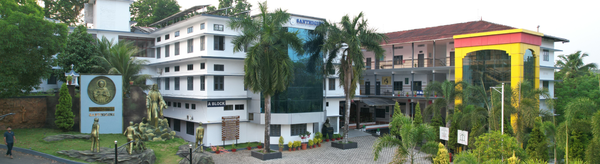
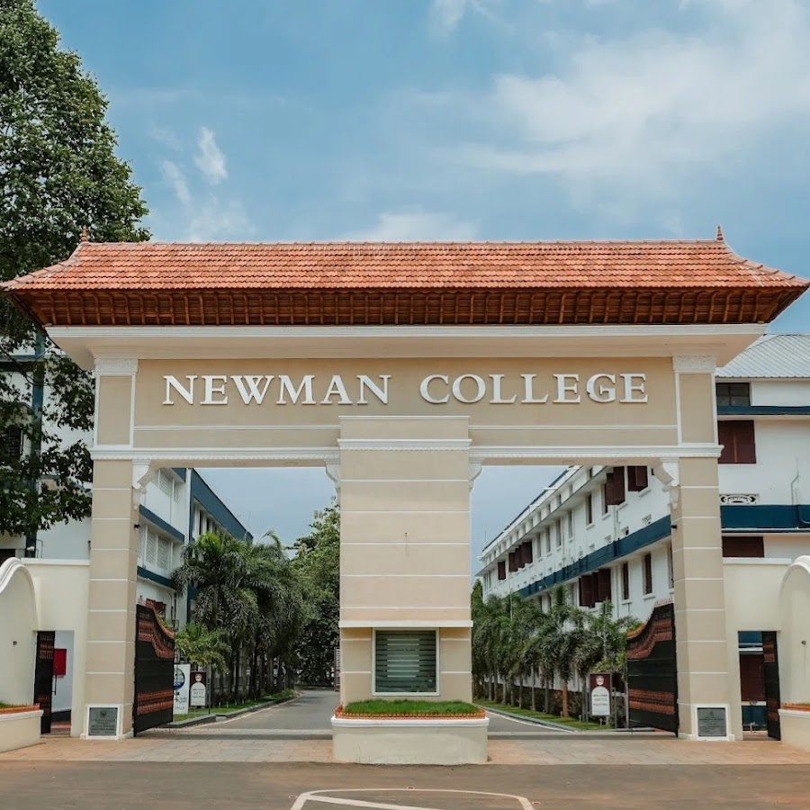
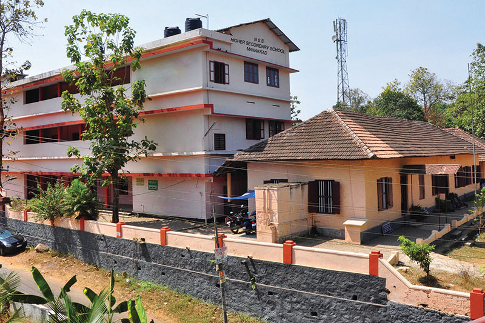
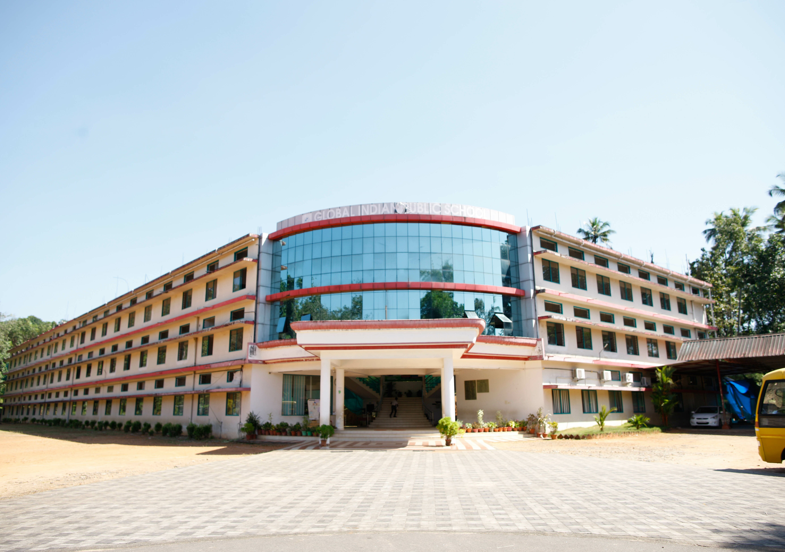

Education
Every chapter, from school to postgraduate studies, taught me something new.

Master of Computer Applications
Santhigiri College of Computer Sciences, Vazhithala
A chapter of fresh beginnings, ambitious ideas and endless possibilities, where every challenge opens a new door and every experience adds meaning to the journey.
Postgraduate (PG)
Bachelor of Science in Zoology
Newman College, Thodupuzha
Beyond textbooks and laboratories, this journey brought unexpected discoveries, cherished friendships and experiences that gave me memories to treasure.
Undergraduate (UG)
Higher Secondary Education
NSS Higher Secondary School, Manakkad
The years when I began to wonder what I wanted to become, learning to balance studies with curiosity and to trust my own pace.
Higher Secondary (12th)
Secondary School Education
Global Indian Public School, Kodikulam
Where I first learned to ask questions and enjoy finding the answers, the foundation that every later chapter was built on.
SSLC (10th)